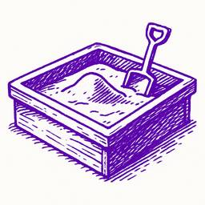
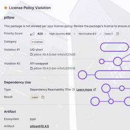
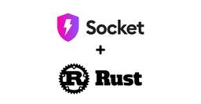
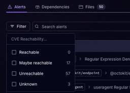
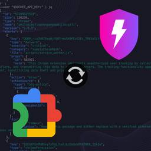
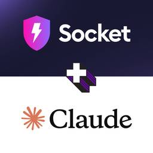
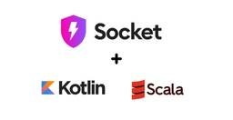

Socket
フィード

Critical Vulnerability in NestJS Devtools: Localhost RCE via Sandbox Escape
Socket
A flawed sandbox in @nestjs/devtools-integration lets attackers run code on your machine via CSRF, leading to full Remote Code Execution (RCE).
1日前

Introducing License Overlays: Smarter License Management for Real-World Code
Socket
Customize license detection with Socket’s new license overlays: gain control, reduce noise, and handle edge cases with precision.
1日前

Introducing Rust Support in Socket
Socket
Socket now supports Rust and Cargo, offering package search for all users and experimental SBOM generation for enterprise projects.
2日前

Announcing Precomputed Reachability Analysis in Socket
Socket
Socket’s precomputed reachability slashes false positives by flagging up to 80% of vulnerabilities as irrelevant, with no setup and instant results.
3日前

Socket Now Protects the Chrome Extension Ecosystem
Socket
Socket is launching experimental protection for Chrome extensions, scanning for malware and risky permissions to prevent silent supply chain attacks.
4日前

Introducing Socket MCP for Claude Desktop
Socket
Add secure dependency scanning to Claude Desktop with Socket MCP, a one-click extension that keeps your coding conversations safe from malicious packages.
4日前

Introducing Scala and Kotlin Support in Socket
Socket
Socket now supports Scala and Kotlin, bringing AI-powered threat detection to JVM projects with easy manifest generation and fast, accurate scans.
5日前

AI + a16z Podcast: Vibe Coding, Security Risks, and the Path to Progress
Socket
Socket CEO Feross Aboukhadijeh and a16z partner Joel de la Garza discuss vibe coding, AI-driven software development, and how the rise of LLMs, despite their risks, still points toward a more secure and innovative future.
8日前

Toptal’s GitHub Organization Hijacked: 10 Malicious Packages Published
Socket
Threat actors hijacked Toptal’s GitHub org, publishing npm packages with malicious payloads that steal tokens and attempt to wipe victim systems.
10日前
Surveillance Malware Hidden in npm and PyPI Packages Targets Developers with Keyloggers, Webcam Capture, and Credential Theft
Socket
Socket researchers investigate 4 malicious npm and PyPI packages with 56,000+ downloads that install surveillance malware.
10日前